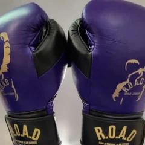
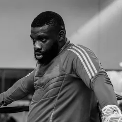
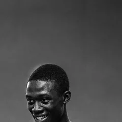

L’athlète
Rencontrez Tidiane
Boxeur amateur en catégorie 60 kg, Tidiane avance avec une méthode simple : travailler, recommencer, progresser.
Le parcours
Du Sénégal au Havre
Tidiane est parti de Dakar pour poursuivre sa route en Normandie. Au Havre, il a trouvé un point d’appui auprès de son cousin Saliou, qui l’a accueilli. Ce lien familial reste au cœur du projet : avancer avec des personnes qui se soutiennent et tiennent leurs engagements.
Sur ses réseaux, il partage le quotidien de la préparation : le sac, le ballon lesté, le sparring, la récupération. Le mot qui accompagne ses publications, PROCESS, dit l’essentiel de sa philosophie.
À compléter avec Tidiane : ses débuts en boxe, son arrivée au Havre, ce qui le motive — dans ses mots.
Les valeurs
Travail
La régularité avant tout : chaque séance compte.
Famille
La confiance d’un cercle proche qui tient parole.
Résilience
Apprendre de chaque combat pour progresser.
Good vibes
Une énergie collective qui fait avancer la salle.
Palmarès vérifié
Résultats officiels
Seuls les résultats justifiés par une source officielle (fédération, organisateur) apparaissent ici.
| Année | Compétition | Catégorie | Résultat | Source |
|---|---|---|---|---|
| 2025 | Championnat de Normandie | 60 kg | Vice-champion | lien ou document officiel |
L’équipe
Ceux qui l’entourent

Club
ROAD · Ring Olympique Alain Dessaux
Club de boxe de Déville-lès-Rouen, salle Guynemer. Tidiane y combat sous les couleurs violettes du club.
Club
HAC Kickboxing
La section kickboxing du Havre Athletic Club, le club omnisports historique de la ville.

Famille
Saliou
Son cousin, qui l’a accueilli au Havre. Le premier soutien du projet.
Management
Resnick Njeke
Manager : partenariats, calendrier, communication et relation avec les sponsors.

Suivre la suite du parcours
Les entraînements, les combats et les coulisses sont publiés chaque semaine sur Instagram et TikTok.